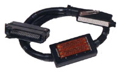
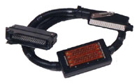

http://2a2.ru/
| тел. +7 927 800 76 16 http://2a2.ru/ |
|---|
Коды неисправностей автомобилей ГАЗ И УАЗПри проведении диагностики инжекторных двигателей использовались приборы ПКП-1, ПРОКОН-1, СТМ-2 и СТМ-3 


ПЕРЕЧЕНЬ КОДОВ:Нажмите на код интересующей Вас неисправности.
|
•главная •где купить •цены •продукция •документация •программы •коды ГАЗ •ЭСУД ГАЗ •ЭСУД PATRIOT •ЭСУД ВАЗ •ЭСУД STEYR •автосервисы •сайты e-mail: •a2@2a2.ru |